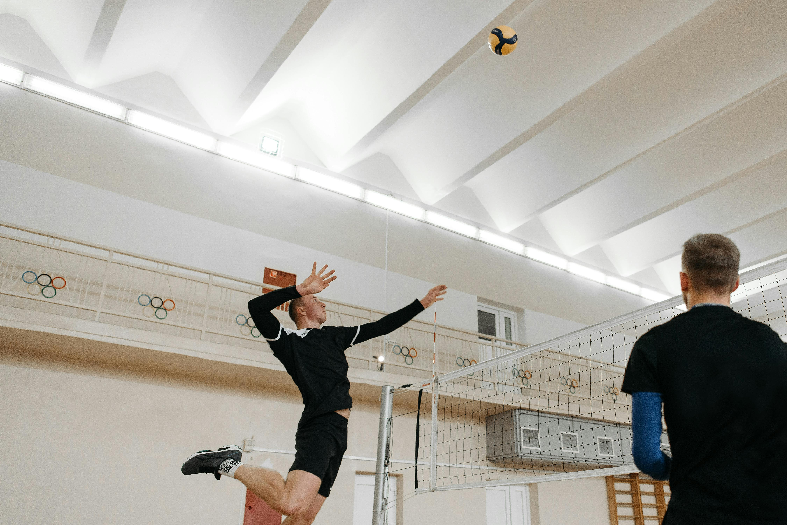

Even if you have perfect footwork and swinging technique, you may not be ready to make an effective attack. This is the case for me at the time of writing this. I have decent movement, but seem to always end up with the ball out of range once I'm in the air. There are various factors to consider which help identify why this happens.
The major problem I have identified is my lack of patience when attacking. I get far too excited and rush towards where I predict the ball to go. Remember that it is the setters job to determine the tempo of the attack. They can set the ball first tempo (1ft above the net), second tempo (2ft above the net), or third tempo (3ft above the net). It is not the job of the hitter to anticipate the trajectory of the ball, wait to actually see the trajectory then start your approach to intercept.
A critical component to generating consistent attacks is to be mindful of your transition. Transition refer to the switch from being offensive to defensive or defensive to offensive. As soon as you identify that you are not needed for defence (i.e., someone else calls it) you should be moving. Move to the position where you want to start your approach. Change from the squared-up passing medium-stance (feet shoulder-width apart facing forward with hands forward in peripheral vision facing each other) to your attacking high-stance. Bring your arms down out of peripheral vision. You no longer need to track your hands to pass the ball, instead you will use them to generate momentum during your approach.
Prepare for the approach by bringing your non-attacking-side leg forward into a partial kneel. As the setter finishes contact you start to transition the weight from heel-to-toe as you prepare to launch forward. Use some patience and move slowly to observe the trajectory of the ball and calculate your target ball position (where along the balls trajectory you will intercept). As soon as you have your target then you launch towards it directly with your penultimate step (second-last step) with explosive movement. This is your largest step forward with your arms swinging all the way back and landing on the heel of your attacking-side foot at a 45 degree angle. The distance of this step is dictated by the setter and the distance they put the ball from the net.
Your last step (close-step) only moves a tiny distance and lands parallel to your other foot (45 degree angle). Fully extend your hips, knees, and ankle going from your heel-to-toe in an explosive upward motion. You simultaneously swing your arms, which should be ready behind you, in a fluid windmill motion all the way forward up and straight over your head without bending your elbows. If all goes well this should generate the most possible vertical for your jump to the ball.
As we have said, it is important to have patience and wait to observe the trajectory of the ball to calculate when you will intercept the ball for an attack. But how do we identify where we will intercept the ball? This requires us to understand how fast we can get to the ball and our vertical leap. Repetition will make this second nature, then you can focus more energy on the opponents court and where to attack. You could measure your approach speed and height by recording yourself, or you can simply get a feel for it at the net by testing your approach a few times. Once you have a feel for how high you can get above the net it makes your calculation much easier and will improve your accuracy.